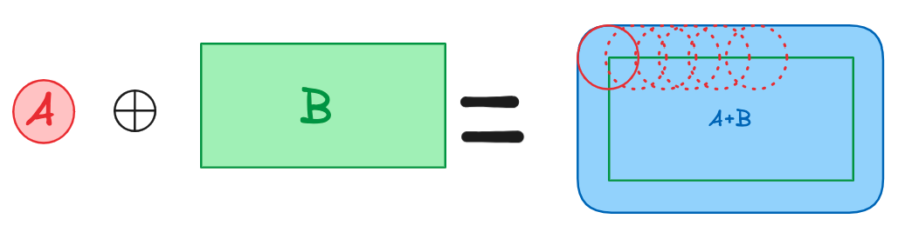

Key concepts
On this page, the concepts are explained in a quick and visual way, to have an intuitive understanding of the concepts and their use in the algo. Further precision and specifics regarding the computation can be found in the corresponding pages with the navigation links.
Math tools
Hausdorff Distance

We can see that the distance is not symetric, d(A,B) = 4 and d(B,A) = 5. The undirected distance is the maximum of the two.
Minkowski sum
The minkowski sum of sets A and B is defined as A⊕︎B={a + b | a ∈ A, b ∈ B}. This looks like this :
Computing S_1/2
Let's define a set where the two objects are at a Hausdorff distance of 1. There is only one maximum set S that lies at the same Hausdorff distance from A and from B.
S(A, B) := ( A ⊕ D1/2) ∩ (B ⊕ D1/2)

Figure 3 : showing the S1/2 set. We take the Minkowski sum of the